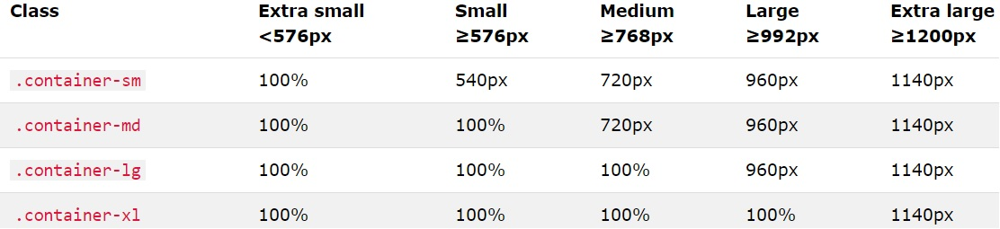

.col-sm-3
.col-sm-1
.col-sm-2
.col-sm-6
--------------------------------------------------------------------------------------------------------------------------------------------------------
--------------------------------------------------------------------------------------------------------------------------------------------------------
--------------------------------------------------------------------------------------------------------------------------------------------------------
With non fluid container uou can use the .container-sm|md|lg|xl classes to create responsive containers.
The max-width of the container will change on different screen sizes/viewports:
